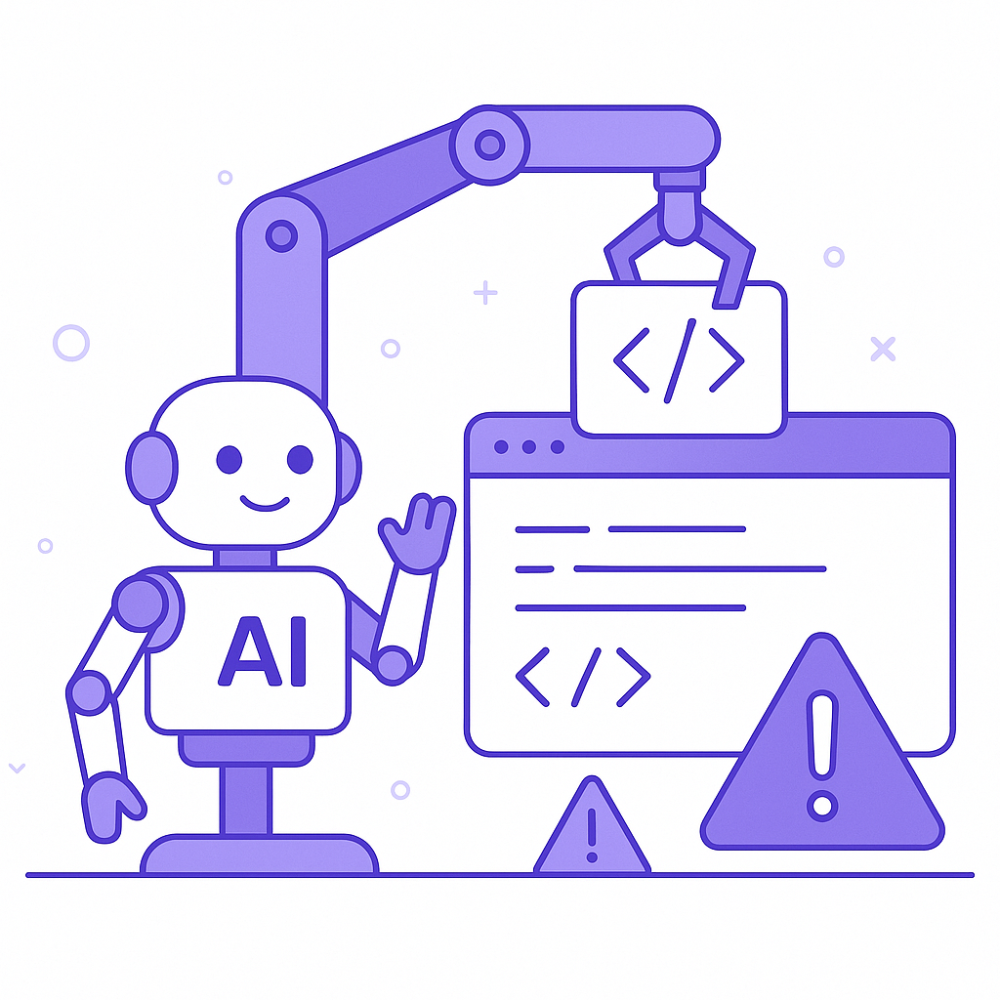

Publishing Recommendation
reviseToday's posts effectively address current trends but need refinement to better align with Purands AI's voice and values. Some drafts lean toward over-promising AI capabilities without acknowledging potential limitations, which could mislead readers. Revising these to maintain a realistic tone while still highlighting the tangible benefits of AI will enhance credibility and reader trust.
LinkedIn Posts (10)
1. Meta says Muse has over 10M users, with shopping a top activity ★ Purands solution · high priority
CTA: How do you see mobile-first commerce reshaping your customer engagement strategy?
Alternative hooks
- Meta's Muse app just hit 10 million users, with shopping leading the charge.
- 10 million users on Muse: Shopping is a top activity. Are you ready for mobile-first commerce?
- Muse's 10M user milestone is a wake-up call: Mobile-first commerce is here to stay.
Research behind this post (sources, summaries & confidence)
Meta says Muse has over 10M users, with shopping a top activity conf 0.90 · WhatsApp Commerce
Meta's Muse app achieving significant adoption with shopping highlights the growing importance of mobile-first commerce solutions in APAC. This is directly aligned with retention marketing through enhanced customer interactions on messaging platforms like WhatsApp.
Sources & what I took from each
- Meta's Muse app has over 10M users with shopping as a top activity: Multiple sources, including TechCrunch and Techmeme, confirm the user base and shopping activities. ↗ read source
Statistics
- Muse has over 10 million users.
Original trend links
- https://techcrunch.com/2026/10/21/meta-says-muse-has-over-10m-users-with-shopping-a-top-activity/
- https://www.techmeme.com/261021/p51#a261021p51
Risks / caveats
- User privacy concerns could impact adoption rates if not addressed appropriately.
2. Amazon eyes 300K holiday hires ★ Purands solution · high priority
CTA: How do you manage customer demand during peak seasons without overwhelming costs?
Alternative hooks
- Amazon's hiring 300,000 seasonal workers. But what about retention?
- 300K hires for Amazon this holiday season. How's your retention strategy?
- Massive seasonal hiring at Amazon highlights a critical retail challenge.
Research behind this post (sources, summaries & confidence)
Amazon eyes 300K holiday hires conf 0.80 · Retention Marketing
Amazon's significant seasonal hiring reflects the scale of operations needed to manage customer demand and retention during peak seasons, highlighting the importance of strategic planning in retention marketing.
Sources & what I took from each
- Amazon plans to hire 300K for the holiday season: Retail Dive confirms the hiring plans and their strategic importance. ↗ read source
Statistics
- 300,000 seasonal hires planned.
Original trend links
Risks / caveats
- Cost of hiring and training temporary staff can impact profit margins.
3. Meta prices Muse Voice Transcribe at $0.18 an hour ★ Purands solution · high priority
CTA: Have you considered how voice commerce could enhance your customer engagement?
Alternative hooks
- Meta's $0.18 per hour for voice transcribe could reshape voice commerce.
- How does pricing at $0.18 per hour change the game for WhatsApp commerce?
- Voice commerce is getting more accessible, thanks to Meta's latest move.
Research behind this post (sources, summaries & confidence)
Meta prices Muse Voice Transcribe at $0.18 an hour conf 0.75 · WhatsApp Commerce
Meta's competitive pricing for Muse Voice Transcribe indicates a push towards accessible AI tools for voice commerce, which is integral for enhancing customer interactions on platforms like WhatsApp.
Sources & what I took from each
- Meta prices Muse Voice Transcribe competitively: VentureBeat provides details on the pricing and features of Muse Voice Transcribe. ↗ read source
Statistics
- Pricing at $0.18 per hour.
Original trend links
Risks / caveats
- Price wars could erode profitability in the long term.
4. GitLab patches a critical flaw that lets unauthenticated attackers run code on self-managed servers ★ Purands solution · high priority
CTA: How do you ensure data security in your retention marketing strategies?
Alternative hooks
- Security in CRM isn't just a tech issue, it's a business imperative.
- GitLab's recent patch underscores a critical point: secure data handling is non-negotiable.
- When a CRM system's security falters, trust and retention strategies are at risk.
Research behind this post (sources, summaries & confidence)
GitLab patches a critical flaw that lets unauthenticated attackers run code on self-managed servers conf 0.70 · CRM Strategy
Addressing security vulnerabilities is crucial for CRM platforms to maintain trust and data integrity, impacting retention marketing strategies that rely on secure customer data handling.
Sources & what I took from each
- GitLab patches a critical security flaw: TechMeme reports on the security patch and its importance. ↗ read source
Original trend links
Risks / caveats
- Ongoing security challenges could undermine user confidence.
5. Security in Customer Data Platforms ★ Purands solution · high priority
CTA: How do you prioritize data security in your retention marketing strategy?
Alternative hooks
- Security breaches affect trust in customer data platforms.
- Railway's breach is a wake-up call for data security in marketing.
- Trust in data-driven systems starts with robust security measures.
Research behind this post (sources, summaries & confidence)
Cloud provider Railway says an unauthorized party may have accessed customer encrypted environment variables conf 0.60 · Customer Data Platforms
Security breaches in customer data platforms underscore the need for robust security measures, crucial for maintaining customer trust in data-driven retention marketing efforts.
Sources & what I took from each
- Railway reports a potential security breach of encrypted variables: TechMeme discusses the breach and its potential implications. ↗ read source
Original trend links
Risks / caveats
- Data breaches can lead to loss of customer trust and regulatory fines.
6. OpenAI's latest AI models are coming to Google Cloud and Antigravity
CTA: How do you balance leveraging advanced AI in the cloud with maintaining control over your tech stack?
Alternative hooks
- When OpenAI teams up with Google Cloud, the industry takes notice.
- AI isn't just a buzzword anymore; it's integrating into our tech backbone.
- OpenAI's models on Google Cloud: a game-changer or a dependency risk?
Research behind this post (sources, summaries & confidence)
OpenAI's latest AI models are coming to Google Cloud and Antigravity conf 0.85 · AI Industry
OpenAI's collaboration with Google Cloud to host its latest models highlights the mainstreaming of advanced AI tools in cloud services. This is crucial for retention marketing platforms as it ensures scalable and efficient AI-driven customer engagement solutions.
Sources & what I took from each
- OpenAI's latest AI models are being integrated into Google Cloud: Ars Technica provides details on the collaboration between OpenAI and Google Cloud. ↗ read source
Original trend links
Risks / caveats
- Potential over-reliance on cloud platforms could lead to vendor lock-in.
7. AI Startups
CTA: What AI innovations are you most excited to see transform your field?
Alternative hooks
- A year-old company raising $1 billion is no small feat.
- Investors are pouring billions into AI, but what's the real impact?
- Flapping Airplanes just raised $1B. Why does it matter?
Research behind this post (sources, summaries & confidence)
Year-old AI lab Flapping Airplanes raises $1B at a $6B valuation conf 0.85 · AI Startups
The significant funding round for Flapping Airplanes underscores the high investor confidence in AI startups, particularly those focusing on innovative model development, which can impact retention strategies by providing cutting-edge tools.
Sources & what I took from each
- Flapping Airplanes raises $1B at a $6B valuation: TechCrunch report confirms the funding and valuation details. ↗ read source
Statistics
- Raised $1 billion in funding.
- Valuation at $6 billion.
Original trend links
Risks / caveats
- High valuations could lead to pressures on performance and growth.
8. Recursive launches Flint, a laptop coding model it says was largely built by AI
CTA: How do you see AI changing software development in the next few years?

⬇ Download image
Image prompt · flat-vector
Caption: AI-driven software development: Efficiency vs. Risk
Alternative hooks
- AI building AI: Recursive's Flint might just be the start.
- Recursive's Flint shows us AI's potential in coding.
- Coding models built by AI are now a reality with Flint.
Research behind this post (sources, summaries & confidence)
Recursive launches Flint, a laptop coding model it says was largely built by AI conf 0.80 · AI Startups
Recursive's release of Flint, a coding model significantly built by AI, represents a practical implementation of AI in software development, relevant to retention marketing platforms where AI-driven efficiency and innovation can lead to better customer engagement solutions.
Sources & what I took from each
- Recursive's release of Flint, a coding model significantly built by AI: TechCrunch reports the launch of Flint, emphasizing its development was largely AI-driven. ↗ read source
Original trend links
Risks / caveats
- Dependence on AI for development could lead to undiscovered biases or errors in the coding model.
9. Meta to create a new class of shares to fund AI push
CTA: What do you think about using new share classes to drive AI investments? How might this approach influence AI development in other sectors?
Alternative hooks
- Meta just created a new class of shares to fund its AI ambitions.
- A new financial strategy from Meta could reshape AI investments.
- Meta's AI funding strategy could set a new standard in tech.
Research behind this post (sources, summaries & confidence)
Meta to create a new class of shares to fund AI push conf 0.80 · AI in Business
Meta's financial strategy to boost AI investments could influence AI development trends significantly, impacting how retention marketing platforms integrate AI for customer lifecycle management.
Sources & what I took from each
- Meta is creating a new class of shares to fund AI developments: Reports from TechCrunch and The Verge provide details on Meta's financial strategy. ↗ read source
Original trend links
- https://techcrunch.com/2026/10/21/meta-wants-to-pay-for-its-broad-ai-buildout-with-a-newly-created-class-of-stock/
- https://www.theverge.com/tech/1015799/meta-shares-class-ai-q3-2026-earnings
Risks / caveats
- Market volatility may impact the success of the new share class.
10. AI Startups
CTA: How do you see AI-driven coding models like Flint impacting your development workflow?
Alternative hooks
- Recursive's Flint just hit the market, and it's a coder's new best friend.
- What if AI could code with the efficiency of a seasoned developer?
- Flint's launch might just streamline your next big software project.
Research behind this post (sources, summaries & confidence)
Recursive Releases Flint, an Open-Weight 40B MoE Local Coding Model for Agents conf 0.80 · AI Startups
Recursive's Flint model is notable for its potential to enhance AI-driven coding, which can streamline development processes for retention marketing platforms, making them more efficient and adaptable.
Sources & what I took from each
- Recursive releases Flint, a 40B MoE coding model: MarkTechPost article discusses the features and potential applications of Flint. ↗ read source
Original trend links
Risks / caveats
- Complexity of large models may lead to higher resource consumption.
Today's Trends
| # | Trend | Category | Why it matters |
|---|---|---|---|
| 1 | Recursive launches Flint, a laptop coding model it says was largely built by AI
source |
AI Startups | Recursive's release of Flint, a coding model significantly built by AI, represents a practical implementation of AI in software development, relevant to retention marketing platforms where AI-driven efficiency and innovation can lead to better customer engagement solutions. |
| 2 | Meta says Muse has over 10M users, with shopping a top activity
source source |
WhatsApp Commerce | Meta's Muse app achieving significant adoption with shopping highlights the growing importance of mobile-first commerce solutions in APAC. This is directly aligned with retention marketing through enhanced customer interactions on messaging platforms like WhatsApp. |
| 3 | OpenAI's latest AI models are coming to Google Cloud and Antigravity
source |
AI Industry | OpenAI's collaboration with Google Cloud to host its latest models highlights the mainstreaming of advanced AI tools in cloud services. This is crucial for retention marketing platforms as it ensures scalable and efficient AI-driven customer engagement solutions. |
| 4 | Meta to create a new class of shares to fund AI push
source source |
AI in Business | Meta's financial strategy to boost AI investments could influence AI development trends significantly, impacting how retention marketing platforms integrate AI for customer lifecycle management. |
| 5 | Year-old AI lab Flapping Airplanes raises $1B at a $6B valuation
source |
AI Startups | The significant funding round for Flapping Airplanes underscores the high investor confidence in AI startups, particularly those focusing on innovative model development, which can impact retention strategies by providing cutting-edge tools. |
| 6 | Vercel Open-Sources durable-harness for Crash-Proof Coding Agents
source |
AI in Business | Vercel's open-source durable-harness is significant for retention marketing as it provides robust infrastructure for AI-driven applications, ensuring reliability and consistency in customer engagement tools. |
| 7 | Meta says it would’ve made over $22 billion if it didn’t have to pay a child safety settlement
source |
AI in Business | Meta's financial disclosures highlight the impact of regulatory actions on tech giants' revenue, which is a critical consideration for retention marketing platforms that must navigate compliance alongside AI development. |
| 8 | AuxoAI raises $20.7M Series A to accelerate growth
source |
AI Startups | AuxoAI's funding round is relevant as it focuses on building and deploying AI systems for large enterprises, aligning with retention marketing efforts to leverage AI for personalized customer experiences. |
| 9 | Recursive Releases Flint, an Open-Weight 40B MoE Local Coding Model for Agents
source |
AI Startups | Recursive's Flint model is notable for its potential to enhance AI-driven coding, which can streamline development processes for retention marketing platforms, making them more efficient and adaptable. |
| 10 | Meta prices Muse Voice Transcribe at $0.18 an hour
source |
WhatsApp Commerce | Meta's competitive pricing for Muse Voice Transcribe indicates a push towards accessible AI tools for voice commerce, which is integral for enhancing customer interactions on platforms like WhatsApp. |
| 11 | Amazon eyes 300K holiday hires
source |
Retention Marketing | Amazon's significant seasonal hiring reflects the scale of operations needed to manage customer demand and retention during peak seasons, highlighting the importance of strategic planning in retention marketing. |
| 12 | GitLab patches a critical flaw that lets unauthenticated attackers run code on self-managed servers
source |
CRM Strategy | Addressing security vulnerabilities is crucial for CRM platforms to maintain trust and data integrity, impacting retention marketing strategies that rely on secure customer data handling. |
| 13 | Cloud provider Railway says an unauthorized party may have accessed customer encrypted environment variables
source |
Customer Data Platforms | Security breaches in customer data platforms underscore the need for robust security measures, crucial for maintaining customer trust in data-driven retention marketing efforts. |
| 14 | Blackstone’s Jas Khaira says fears over AI-buildout debt are overblown
source |
AI in Business | Blackstone's perspective on AI investment risks highlights the financial considerations for companies investing in AI for retention marketing, emphasizing sustainable growth strategies. |
Risk Assessment
- Potential over-reliance on AI capabilities without addressing inherent limitations.
- Excessive focus on AI-driven solutions may imply unrealistic expectations.
Suggested LinkedIn Comments (30)
Open each post, then paste the copied comment. Nothing is posted automatically.
1. opinion · rss:techcrunch.com — Tesla said Wednesday it will start selling its Cybercab to customers by the end
Post by: rss:techcrunch.com
Why it works: It acknowledges Tesla's innovation while emphasizing the importance of safety regulations, adding a balanced view.
↗ Open LinkedIn post to paste comment2. insight · rss:techcrunch.com — Blackstone’s AI head on why the PE giant isn't panicked by market jitters.
Post by: rss:techcrunch.com
Why it works: It provides an insight into why not panicking can be beneficial, adding depth to the post's mention of market jitters.
↗ Open LinkedIn post to paste comment3. expansion · rss:techcrunch.com — The social media giant is planning a new stock strategy to help power its broad
Post by: rss:techcrunch.com
Why it works: It expands the discussion by linking financial strategy with technological innovation, adding a broader perspective.
↗ Open LinkedIn post to paste comment4. insight · rss:techcrunch.com — Hosts are threatening to leave the platform after Airbnb says that they can no l
Post by: rss:techcrunch.com
Why it works: The comment provides insight into the potential consequences of the policy change, adding nuance to the conversation.
↗ Open LinkedIn post to paste comment5. opinion · rss:techcrunch.com — TechCrunch Founder Summit is a full-day gathering in Boston on November 4 where
Post by: rss:techcrunch.com
Why it works: It emphasizes the unique value of in-person events, adding a personal stance on their importance.
↗ Open LinkedIn post to paste comment6. opinion · rss:techcrunch.com — Meta Muse users are adopting the app for shopping and personal productivity, the
Post by: rss:techcrunch.com
Why it works: The comment offers a positive outlook on AI adoption, aligning with the post's data and providing a specific takeaway.
↗ Open LinkedIn post to paste comment7. insight · rss:techcrunch.com — Just 9 months after raising a $180 million seed round, Flapping Airplanes has la
Post by: rss:techcrunch.com
Why it works: It highlights the ethical dimensions of AI development, which adds depth to the post's financial focus.
↗ Open LinkedIn post to paste comment8. opinion · rss:techcrunch.com — Tesla's revenue was flat and its expenses skyrocketed as it pressed the accelera
Post by: rss:techcrunch.com
Why it works: It acknowledges Tesla's strategy while pointing out the importance of financial sustainability, adding a balanced view.
↗ Open LinkedIn post to paste comment9. insight · rss:techcrunch.com — Startup Recursive has released Flint, a free, laptop-sized coding model built la
Post by: rss:techcrunch.com
Why it works: The comment highlights the potential impact of the model on accessibility, adding a new angle to the conversation.
↗ Open LinkedIn post to paste comment10. insight · rss:techcrunch.com — Sources say more cuts could follow as the company looks to improve its finances.
Post by: rss:techcrunch.com
Why it works: It provides insight into the implications of financial strategy adjustments, adding depth to the post's focus on cuts.
↗ Open LinkedIn post to paste comment11. insight · rss:www.theverge.com — On Tuesday, I published a story about how YouTube appeared to be testing hiding
Post by: rss:www.theverge.com
Why it works: It highlights the importance of communication in managing user expectations and reactions to potential platform changes.
↗ Open LinkedIn post to paste comment12. opinion · rss:www.theverge.com — For years, Elon Musk has been making big promises to Tesla owners about unsuperv
Post by: rss:www.theverge.com
Why it works: This comment adds perspective by focusing on the challenges of safety and regulation, not just the deadline.
↗ Open LinkedIn post to paste comment13. opinion · rss:www.theverge.com — A rush of new data centers could bring air pollution roaring back to levels not
Post by: rss:www.theverge.com
Why it works: It stresses the importance of sustainability in tech infrastructure development, echoing broader environmental priorities.
↗ Open LinkedIn post to paste comment14. insight · rss:www.theverge.com — Meta says it's issuing a new class of shares to fund its AI initiatives. As part
Post by: rss:www.theverge.com
Why it works: It highlights the strategic financial implications of Meta's move, beyond just the headline of investment.
↗ Open LinkedIn post to paste comment15. opinion · rss:www.theverge.com — It remains to be seen if people really want to watch vertical content on horizon
Post by: rss:www.theverge.com
Why it works: It emphasizes the importance of content quality over format experimentation, which is a practical viewpoint.
↗ Open LinkedIn post to paste comment16. opinion · rss:www.theverge.com — Meta had to shell out $9.89 billion to pay for a chunk of the child safety settl
Post by: rss:www.theverge.com
Why it works: It comments on the broader implications of financial decisions and emphasizes ethical considerations in tech.
↗ Open LinkedIn post to paste comment17. insight · rss:www.theverge.com — Two bugs found with AI are behind major issues today for 4chan, DeviantArt, Wiki
Post by: rss:www.theverge.com
Why it works: It underscores the critical nature of maintaining secure programming languages, emphasizing prevention over reaction.
↗ Open LinkedIn post to paste comment18. opinion · rss:www.theverge.com — As the smoke clears from its outrageous Roadster demo, Tesla reported Q3 earning
Post by: rss:www.theverge.com
Why it works: It provides a reality check on the relationship between marketing hype and financial results, offering a grounded perspective.
↗ Open LinkedIn post to paste comment19. insight · rss:www.theverge.com — Bose announced today it has acquired Skullcandy. Although the two companies are
Post by: rss:www.theverge.com
Why it works: It anticipates potential outcomes of the acquisition while acknowledging the importance of brand identity, offering a balanced view.
↗ Open LinkedIn post to paste comment20. insight · rss:www.theverge.com — Checking out of your next Airbnb might be less of a hassle now that the company
Post by: rss:www.theverge.com
Why it works: It focuses on the tangible benefits of policy changes for user experience, aligning with Airbnb's business goals.
↗ Open LinkedIn post to paste comment21. opinion · rss:feeds.arstechnica.com — Ex-FCC chairs say Brendan Carr aims to scare broadcasters into self-censorship.
Post by: rss:feeds.arstechnica.com
Why it works: The comment highlights the broader implications of the issue, emphasizing democratic values.
↗ Open LinkedIn post to paste comment22. insight · rss:feeds.arstechnica.com — Time-based a la carte charges come on top of the purchase price for the games th
Post by: rss:feeds.arstechnica.com
Why it works: It provides a practical take on how this pricing strategy impacts customer relationships.
↗ Open LinkedIn post to paste comment23. insight · rss:feeds.arstechnica.com — Survey of 2,018 IT heads at big firms points to a lack of leverage.
Post by: rss:feeds.arstechnica.com
Why it works: The comment offers a solution-oriented perspective on improving IT effectiveness in organizations.
↗ Open LinkedIn post to paste comment24. insight · rss:feeds.arstechnica.com — Tesla’s once-booming energy storage business also shrunk in Q3 2026.
Post by: rss:feeds.arstechnica.com
Why it works: It contextualizes the news within broader market dynamics, offering a strategic perspective.
↗ Open LinkedIn post to paste comment25. insight · rss:feeds.arstechnica.com — Opinion: In a world of AI slop, showing the human hands making things helps.
Post by: rss:feeds.arstechnica.com
Why it works: The comment aligns with consumer trends towards valuing authenticity, providing practical advice.
↗ Open LinkedIn post to paste comment26. opinion · rss:feeds.arstechnica.com — Next <em>Mass Effect</em> project canceled as parent company lays off 400.
Post by: rss:feeds.arstechnica.com
Why it works: The comment captures the uncertainty in the industry while recognizing the impact on a popular franchise.
↗ Open LinkedIn post to paste comment27. insight · rss:feeds.arstechnica.com — Google Cloud will have GPT 6.1 Astra, Sol, and Luna in the coming weeks.
Post by: rss:feeds.arstechnica.com
Why it works: It focuses on practical implications for users, which is relevant to tech professionals considering these updates.
↗ Open LinkedIn post to paste comment28. insight · rss:feeds.arstechnica.com — Musk and Trump both denied ordering Starlink slowdown. WSJ reports it was Musk.
Post by: rss:feeds.arstechnica.com
Why it works: The comment emphasizes the importance of transparency, which is a critical issue in high-stakes business scenarios.
↗ Open LinkedIn post to paste comment29. opinion · rss:feeds.arstechnica.com — Trump’s EPA can't unilaterally dismiss SpaceXAI pollution lawsuit, court rules.
Post by: rss:feeds.arstechnica.com
Why it works: It highlights the importance of legal checks in tech innovation, a key societal concern.
↗ Open LinkedIn post to paste comment30. insight · rss:feeds.arstechnica.com — OS operators throwing out that data is "unlikely," research author tells Ars.
Post by: rss:feeds.arstechnica.com
Why it works: The comment suggests a practical improvement, addressing the core issue of data management.
↗ Open LinkedIn post to paste comment